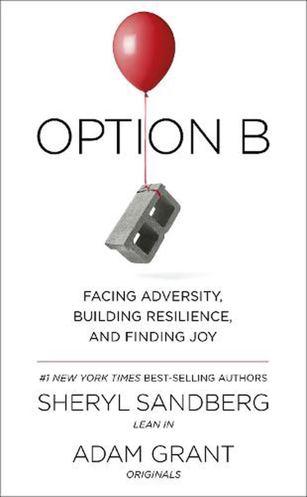

Overview
Sheryl Sandberg, famous for her important positions at Google and Facebook, has led many initiatives that have had a major impact on the tech industry, office environment, and social issues. She is known for her efforts that prioritize innovation, empowerment, and ethical responsibility. Sandberg's leadership and support have motivated change and cultivated a setting in which businesses and individuals can flourish.
Initiatives
1. Lean In Movement:
The Lean In movement, which was sparked by Sandberg's book "Lean In: Women, Work, and the Will to Lead" in 2013, motivates women to chase after their career aspirations and offers assistance to help them conquer obstacles. The organization has created small peer groups called Lean In Circles, which gather frequently to exchange stories and provide mutual assistance in personal and professional growth. This project has expanded worldwide, with numerous groups across more than 170 nations, giving women the means to advance in their professions and promote gender balance in the work environment (Sandberg, 2013).
2. Option B:
After her husband Dave Goldberg's sudden passing, Sandberg teamed up with Adam Grant to collaborate on "Option B: Facing Adversity, Building Resilience, and Finding Joy." The book discusses encountering personal loss and challenges with strength and determination. Sandberg has established a platform called Option B program that helps and community resources for individuals dealing with obstacles. The program's goal is to assist people in developing resilience and discovering happiness despite challenges in life (Sandberg & Grant, 2017).
3. Digital Literacy and Online Safety:
Sandberg has consistently supported the importance of digital literacy and internet safety. At Facebook, she has taken the lead in improving user education on privacy and security, making sure that users are well-informed and empowered to safeguard their personal information. Her focus in this field is on promoting the ethical use of technology and ensuring tech companies protect user data and maintain a secure online space.
Books

Consideratios
Sheryl Sandberg's projects and initiatives have left an indelible mark on the tech industry and society. Through her leadership at Facebook and her advocacy for women's empowerment, digital literacy, and workplace diversity, she has driven meaningful change and inspired countless individuals. Sandberg's commitment to innovation, ethical responsibility, and social impact continues to influence the trajectory of the technology sector and the broader movement towards gender equality and social justice.